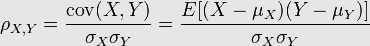
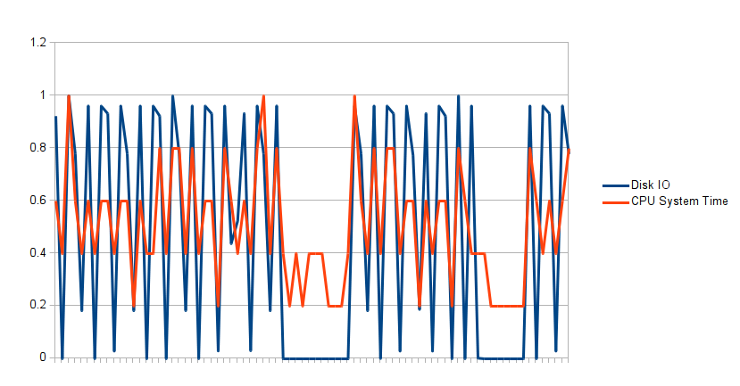
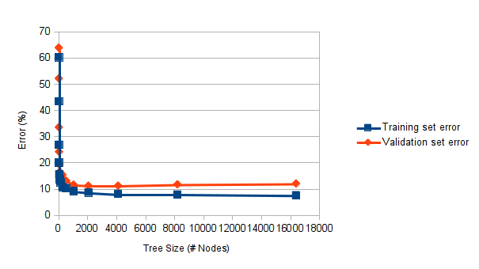
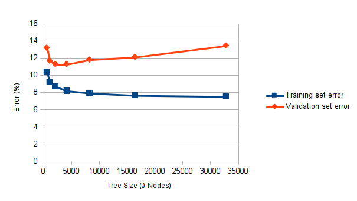
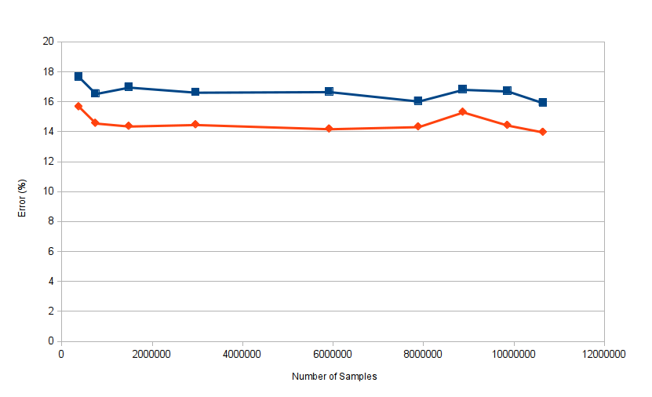

Are you better than a Coin Toss?
by John Oliver and Richard Warburton
Who are we?
- Why you should care
- The Fundamentals
- Practical Problems
- Applying the Theory
'Experts" aren't very good
Big Data solves ALL KNOWN PROBLEMS
Big Data solves ALL KNOWN PROBLEMS
... helps
Validation = Tests for Data
Correlation
A measure of the strength of dependence between two variables
Pearson Correlation

Err...Just look it up
(Assumes linear relationship)
| Range | Strength |
|---|
| <0.4 | Weak/No Correlation |
| <0.7 | Some Correlation |
| >0.7 | Strong Correlation |

Correlation Strength: 0.78453
Learning Curves


